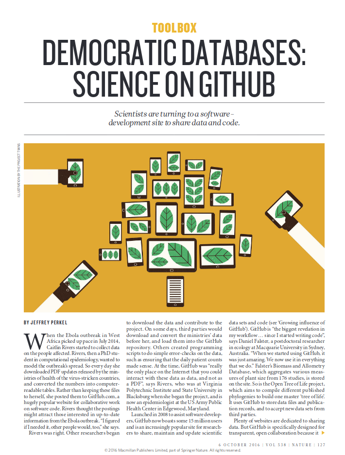

# Git et GitHub Pierre Poulain / @pierrepo 10/2018 <div style="margin-top:150px;"> <img src="assets/img/logo_DUO.png" height="100px" style="vertical-align:midle;"> </img> <div style="display: inline-block; width:100px;"></div> <img src="assets/img/logo_UPD_USPC.png" height="120px" style="vertical-align:midle;"> </img> </div> --- <img src="assets/img/PhD_Comics__Final.doc__1531__20121212.gif" height="650px" style="margin-top:-20px;"> </img> <div class="ref"> <http://phdcomics.com/comics/archive.php?comicid=1531> </div> --- ## Votre script R... 6 mois après --- ## Lequel choisir ? ```bash $ ls R_script_03-04-2018.R R_script_final_modified2.R R_script_17-06-2018.R R_script_final.R R_script_18-03-2018.R R_script_OK.R R_script_final_2018-09-20.R R_script.R R_script_final_final.R R_script_really_final.R ``` --- ## Tri par date ```bash $ ls -lt total 40 -rw-r--r-- 1 pierre pierre 3015 oct. 2 16:45 R_script_final_modified2.R -rw-r--r-- 1 pierre pierre 2124 sept. 28 11:58 R_script_really_final.R -rw-r--r-- 1 pierre pierre 2167 sept. 25 01:05 R_script_final_final.R -rw-r--r-- 1 pierre pierre 2167 sept. 22 09:56 R_script_OK.R -rw-r--r-- 1 pierre pierre 2130 sept. 20 10:36 R_script_final_2018-09-20.R -rw-r--r-- 1 pierre pierre 3700 sept. 1 16:41 R_script_final.R -rw-r--r-- 1 pierre pierre 2125 juin 19 18:15 R_script_17-06-2018.R -rw-r--r-- 1 pierre pierre 1067 avril 3 2018 R_script_03-04-2018.R -rw-r--r-- 1 pierre pierre 1485 mars 18 2018 R_script_18-03-2018.R -rw-r--r-- 1 pierre pierre 1670 févr. 24 2018 R_script.R ``` <!-- .element: class="fragment" style="font-size:1.1rem" --> --- ## Tri par taille ```bash $ ls -lS total 40 -rw-r--r-- 1 pierre pierre 3700 sept. 1 16:41 R_script_final.R -rw-r--r-- 1 pierre pierre 3015 oct. 2 16:45 R_script_final_modified2.R -rw-r--r-- 1 pierre pierre 2167 sept. 25 01:05 R_script_final_final.R -rw-r--r-- 1 pierre pierre 2167 sept. 22 09:56 R_script_OK.R -rw-r--r-- 1 pierre pierre 2130 sept. 20 10:36 R_script_final_2018-09-20.R -rw-r--r-- 1 pierre pierre 2125 juin 19 18:15 R_script_17-06-2018.R -rw-r--r-- 1 pierre pierre 2124 sept. 28 11:58 R_script_really_final.R -rw-r--r-- 1 pierre pierre 1670 févr. 24 2018 R_script.R -rw-r--r-- 1 pierre pierre 1485 mars 18 2018 R_script_18-03-2018.R -rw-r--r-- 1 pierre pierre 1067 avril 3 2018 R_script_03-04-2018.R ``` <!-- .element: style="font-size:1.1rem" --> --- <div class="container" style="align-items: center;"> <div class="col"> <img src="assets/img/ten-simple-rules-repro-comput-research.png" height="600px" class="framed"> </img> <div class="ref" style="margin-top:-20px;"> [DOI 10.1371/journal.pcbi.1003285](https://doi.org/10.1371/journal.pcbi.1003285) </div> </div> <div class="col" style="font-style:italic;"> "Rule 4: Version Control All Custom Scripts" </div> </div> --- # Qui ? Quand ? Quoi ? gestionnaires de versions (*version control systems*) --- ## Gestionnaires de versions CVS (1990) Subversion / SVN (2000) Git (2005) Mercurial (2005) Bazaar (2005) Veracity (2011) --- ### Activités préparatoires <div class="container"> <div class="col"> <span style="font-size:1.2rem">Débuter avec Git et Github en 30 min</span> <iframe width="560" height="315" src="https://www.youtube-nocookie.com/embed/hPfgekYUKgk?rel=0&showinfo=0" frameborder="0" allow="autoplay; encrypted-media" allowfullscreen></iframe> <div class="ref" style="margin-top:-10px;"> <https://www.youtube.com/watch?v=hPfgekYUKgk> </div> </div> <div class="col"> <img src="assets/img/ten-simple-rules-git-github.png" height="400px" class="framed"> </img> <div class="ref" style="margin-top:-20px;"> [DOI 10.1371/journal.pcbi.1004947](https://journals.plos.org/ploscompbiol/article?id=10.1371/journal.pcbi.1004947) </div> </div> <div class="col">  </img> <div class="ref" style="margin-top:-20px;"> [DOI 10.1038/538127a](https://www.nature.com/news/democratic-databases-science-on-github-1.20719) </div> </div> </div> <div class="fragment"> 💡 1 - 2 - tous </div> --- <div style="text-align:left;"> <div style="font-weight:bold;"> When it comes to reproducible science, Git is code for success ... and the key to its popularity is the online repository and social network, GitHub. </div> J. Perkel, [Nature Index, 2018](https://www.natureindex.com/news-blog/when-it-comes-to-reproducible-science-git-is-code-for-success) <div class="fragment" style="font-style:italic;margin-top:40px;"> “Most researchers are primarily collaborating with themselves,” [Tracy] Teal explains. “So, we teach it from the perspective of being helpful to a ‘future you’." </div> </div> --- <!-- .slide: data-background="#a1f4c5" --> ## [Version Control with Git](https://swcarpentry.github.io/git-novice/) Software Carpentry ```bash # Créer un nouveau répertoire $ cd /mnt/c/Users/votre-login-sous-windows $ mkdir planets $ cd planets # Définir son identité $ git config --global user.name "Prénom Nom" $ git config --global user.email "moi@mail.com" # Gérer les fins de lignes $ git config --global core.autocrlf true ``` --- <!-- .slide: data-background="#a1f4c5" --> ## Un peu de spéléo Dans quel commit ai-je ajouté la possibilité de construire un [dendrogramme](https://en.wikipedia.org/wiki/Dendrogram) dans mon programme [autoclasswrapper](https://github.com/pierrepo/autoclasswrapper) ? ```bash $ git clone https://github.com/pierrepo/autoclasswrapper.git $ cd autoclasswrapper $ git log $ ... ``` Combien de fichiers ont été modifiés dans le commit correspondant ? ```bash $ git show xxxxx $ ... ``` --- ## Bonnes pratiques <div style="margin-top:100px;"></div> ### Que met-on dans un dépôt Git ? Des fichiers avec lesquels git peut calculer la différence entre deux versions. <!-- .element: class="fragment" --> <https://www.wooclap.com/NGJXJZ> <!-- .element: class="fragment" --> --- ## Que met-on dans un dépôt Git ? Le plus souvent des fichiers texte de taille *raisonnable* : - un script R ✅ - un fichier PDF ❌ - un script Python ✅ - un fichier fastq ❌ - une image (si générée ❌ sinon ✅) - un fichier raw (protéomique) ❌ --- <!-- .slide: style="text-align:left;" --> ## Ressources [Version Control with Git](https://swcarpentry.github.io/git-novice/) : le cours de Software Carpentry. [Reproducible workflow and version control with Git and Github](https://jules32.github.io/2016-07-12-Oxford/git/) : comment configurer RStudio pour qu'il utilise Git et GitHub. [Pro Git](https://git-scm.com/book/en/v2) (2e édition) de Scott Chacon et Ben Straub. le bouquin de référence sur Git. Téléchargeable gratuitement en PDF, en anglais et en français. Existe aussi en [version papier](https://www.amazon.fr/Pro-Git-Scott-Chacon/dp/1484200772/) (mais en anglais seulement). Et modestement [Git et GitHub](http://cupnet.net/git-github/). ---